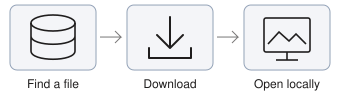
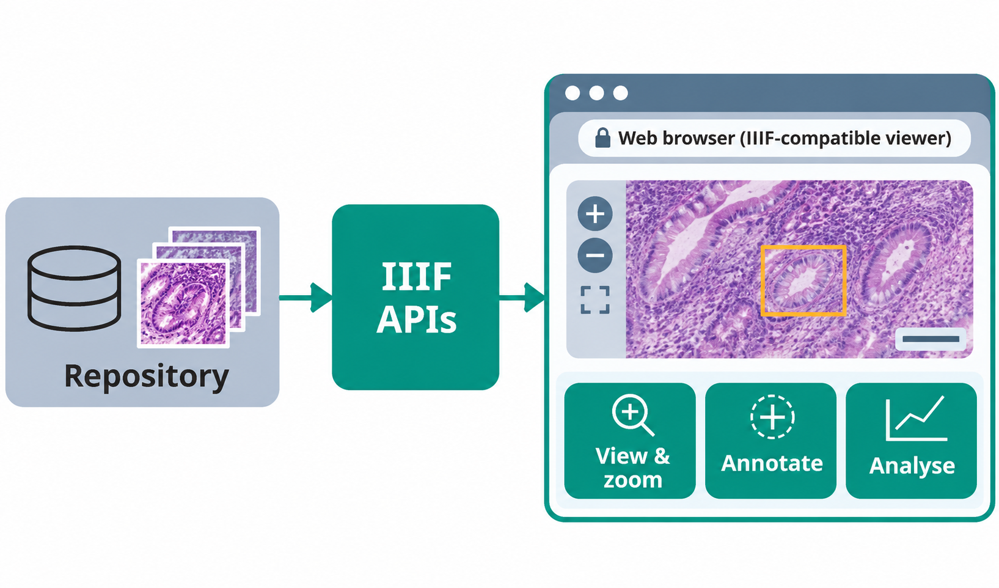

pagetitle: “Introduction to IIIF and 4TU.ResearchData” output-file: iiif-4tu-introduction.html format: revealjs: theme: default css: styles.css
Motivation
Downloading the files should not be the only way to explore visual research data.
Traditional approach to view/inspect deposited research data e.g. images

- slow, inconvenient, and sometimes impossible since it depends on local storage capacity.
- not interoperable: it does not allow you to connect the data with other tools.
What could be an alternative approach?
Retrieve and view the images directly in a browser without downloading them first.

{.center}What is IIIF?
IIIF = International Image Interoperability Framework
An open set of web standards that allows repositories, libraries, archives, museums, and research services to publish images in a way that many tools can understand.
01
How can I inspect a very large image in a browser?
02
How can I request a region, size, or zoom level?
03
How do I describe a sequence or collection of images?
04
How can I aggregate images from different sources?
How does IIIF work?
The basic idea: two complementary APIs
Retrieving visual content
Image API
Standard requests for a particular version of an image.
Thumbnail Crop / region Resize / deep zoom
Describing visual content
Presentation API
A manifest describing which images belong together and how to display them.
Labels & order Metadata Image-service links
Image API: give me the pixels. Presentation API: tell me what I am looking at.
But, how does a viewer know which images to display ?
A IIIF manifest is a structured JSON-LD document, defined by the Presentation API, that describes:
- What the images represent.
- Which images belong together and in what order.
- Where and how to retrieve them.
- What metadata and annotations are associated with them.
The Manifest does not contain the images. It describes and connects them.
Do you know what is json-ld?
JSON-LD (JavaScript Object Notation for Linked Data) is a standard for representing structured, machine-readable and interconnected information on the web.
- JSON provides the structure of the document.
- Linked Data provides a shared meaning to its elements and allows references to other web resources.
- IIIF defines a common vocabulary and data model that compatible applications can interpret.
From a dataset to an IIIF viewer
1
Find
Open a dataset page on 4TU.ResearchData.
→
2
Copy
Copy the IIIF Manifest URL under Interoperability.
→
3
Explore
Paste the manifest URL into an IIIF-compatible viewer.
One standard URL can open the same dataset in multiple compatible tools.
Lets practice!
Examples from 4TU.ResearchData
01 / Microscopy
Large microscopy images
29 GB TIFF
High-throughput single-molecule microscopy images. Preview and inspect large files before downloading.
02 / Cartography
Port City Atlas maps
104 files PDF
High-resolution maps for preview, comparison, teaching, and potential georeferencing workflows.
03 / Machine learning
Antarctic image segmentation
5.9 GB TIFF
Historical Antarctic aerial images and labels used to train semantic-segmentation workflows.
Different tools, same standard
View, browse & compare
- Mirador — multi-image comparison and annotation
- Universal Viewer — general-purpose IIIF viewer
- Clover IIIF — Presentation API viewer
Build & enrich
- Annona — web display and annotations
- OpenSeadragon — deep-zoom image viewing
- Allmaps — georeferencing IIIF maps
- Digirati Manifest Editor — inspect and edit manifests
Not every viewer supports every IIIF feature: choose the tool that fits your workflow.
When is IIIF especially useful?
Whenever visual inspection is an important step in understanding the dataset.
01
High-resolution microscopy
Explore fine detail at different zoom levels
02
Maps, scans & drawings
Compare and inspect spatial or historical resources
03
Collections for teaching & analysis
Enable annotation and reuse across platforms
Now, what do you need to deposit your images with IIIF access in 4TU.ResearchData?
First: expose the images as individual files in the dataset, not as a single ZIP archive.
IIIF works best when images can be accessed individually, not only as files hidden inside an archive.
Recommended for IIIF access
Individual image files
TIFFJPEGPNGJPEG 2000PDF*
Each image can be addressed, inspected, and served separately.
Avoid as the only deposit
ZIP-only image collection
images.zip
Files inside a ZIP cannot be served individually through IIIF.
*PDF support depends on the ability to render or expose its pages as images. You can provide a ZIP for convenience alongside separately exposed files.
Good practices for depositing images
Better documentation and metadata make the resulting IIIF manifest more useful.
What IIIF does not do
× Change the scientific content of the files
× Validate scientific correctness or data quality
× Replace a README, methods, or domain-specific metadata
× Replace licensing or access-condition decisions
× Automatically support every proprietary image format
How IIIF deals with different image formats
IIIF does not prescribe how images must be stored.
The image server must be able to decode the original file format.
The viewer receives a standardised image representation, regardless of the source format.
Scientific information may be lost when generating a visual representation. For instance, a proprietary microscopy file may (e.g. .nd2,.lif,.czi) contain multiple fluorescence channels, multidimensional arrays and acquisition metadata. Delivering a JPEG representation through IIIF does not necessarily preserve all that scientific information.
IIIF standardises how we access images, not how we store them.